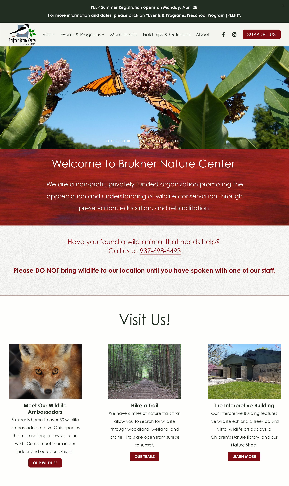
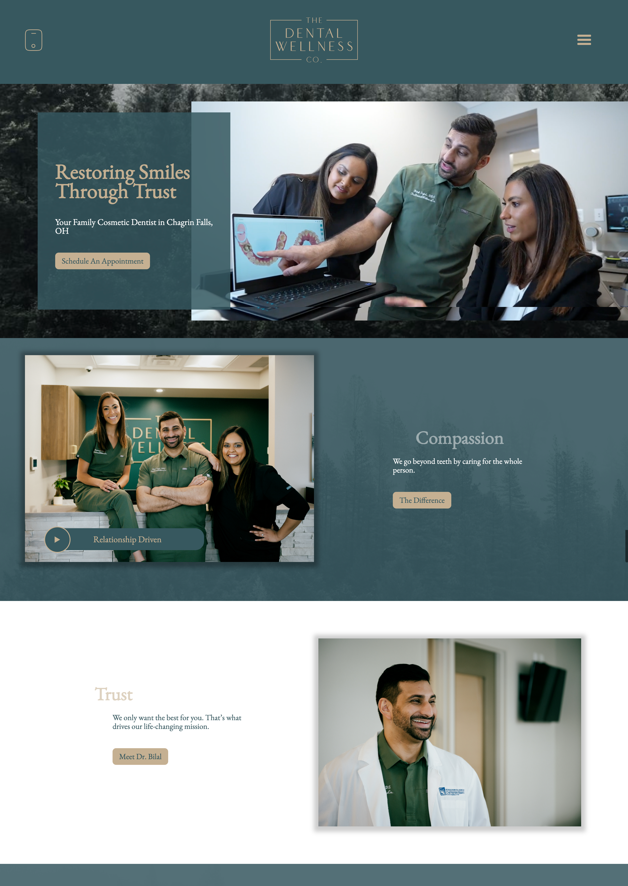
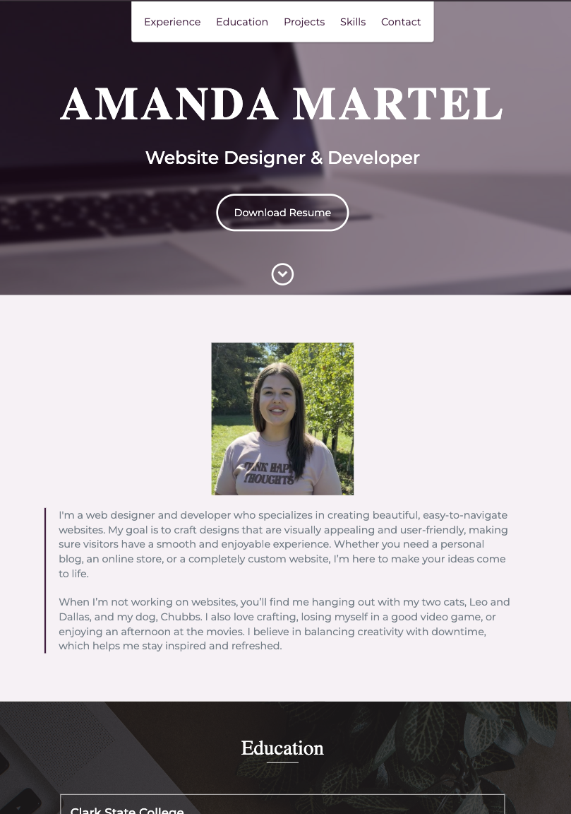
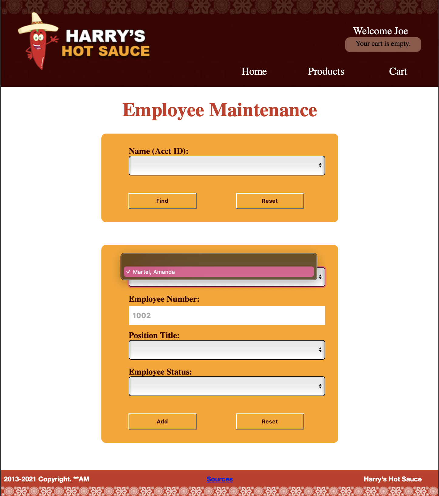

I'm a web designer and developer who specializes in creating beautiful, easy-to-navigate websites. My goal is to craft designs that are visually appealing and user-friendly, making sure visitors have a smooth and enjoyable experience. Whether you need a personal blog, an online store, or a completely custom website, I’m here to make your ideas come to life.
When I’m not working on websites, you’ll find me hanging out with my two cats, Leo and Dallas, and my dog, Chubbs. I also love crafting, losing myself in a good video game, or enjoying an afternoon at the movies. I believe in balancing creativity with downtime, which helps me stay inspired and refreshed.
As a web designer and developer, I developed expertise in building responsive, accessible websites that meet client or team specifications. Through a focus on usability, analytics, and design principles, I learned to create visually appealing and user-friendly websites that are optimized for performance and engagement.
Key Skills and Focus Areas
The curriculum emphasized usability, creative problem-solving, and the ability to adapt to rapidly changing technologies. By focusing on the practical applications of industry-standard software, I gained the skills needed to craft intuitive, visually engaging websites while ensuring seamless functionality.
Key Skills and Focus Areas



